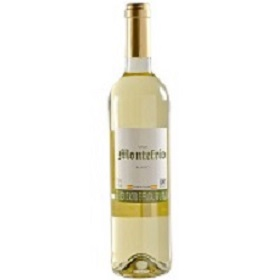

gato-negro

Vino Tinto Gato Negro Cabernet Sauvignon 750 ml Gato Negro Cabernet Sauvignon es un vino chileno con un color rubí intenso, desprendiendo aromas fuertes con notas de frutilla y chocolate, cuenta con taninos suaves, perfecto para una comida especial. Bodega: Viña San Pe
vino-blanco
es una variedad de vino que puede oscilar entre las tonalidades amarillo pajizo, amarillo verdoso o amarillo oro. Se produce por la fermentación alcohólica de la pulpa no coloreada de uvas que pueden tener una piel de color blanco o negro, a fin de mantener un color amarillo transparente en el producto final.
las-moras

Hecho en Finca Las Moras. San Juan, Argentina. El clima desértico permitió lograr un vino de buen cuerpo, delicado, de frutos rojos maduros. Humo y vainilla son notas que redondean un vino con estilo proveniente de un inteligente contacto con las maderas. Ideal para disfrutar de un buen momento acompañado de un exquisito sabor.
sumario_normal

Vino muy complejo, donde aparecen en primera instancia la fruta predominando la piña y el melocotón, dejando paso a las notas derivadas de la crianza, panadería, tostados y frutos secos. Recuerdo largo.Vino graso con mucho volumen en boca, acidez equilibrada y postgusto largo.